- Overview
- Prerequisites
- Creating a New Database Connection
- Managing the Database Connections
- MySQL
- PostgreSQL
- Microsoft SQL Server
- Windows
- Linux/UNIX
- Executing store procedures
- If the SQL Server Database Does Not Use UTF-8 Encoding
- Solving Issues with UTF-8 Characters
- Setup FREETDS in Linux/UNIX
- Collation Database Configuration
- Oracle
- Other Types of Databases
- Discovering Ports and Debugging
Overview
Each ProcessMaker workspace uses one MySQL database to store internal information about processes, user permissions and reports. Nonetheless, ProcessMaker can also be configured to connect to external databases, allowing an organization to integrate ProcessMaker with other DBMS and business applications that utilize databases.
ProcessMaker can establish database connections to MySQL, PostgreSQL, SQL Server/Sybase and Oracle database. By default, it is only possible to connect to MySQL databases, but other types of database can be used if the server running ProcessMaker has the client drivers installed and the PHP modules for those databases. See the PostgreSQL, SQL Server/Sybase and Oracle documentation to enable database connections.
To connect to another type of database, it is possible to use PHP's Open Database Connectivity (OBDC) functions in a trigger to connect to that database. See Other Types of Databases.
ProcessMaker automatically detects which database modules for PHP are installed on the server. For example, if the php-pgsql module is installed on the ProcessMaker server, ProcessMaker will offer the option to connect to PostgreSQL databases.
Prerequisites
An Internet connection is required to access external databases and to download third-party components not supported by ProcessMaker that you may not have installed.
Creating a New Database Connection
To create a new database connection, open the project in which the connection will be used. Then go to right side of the screen and click on the + icon next to the Database Connections option in the Process Objects toolbox.
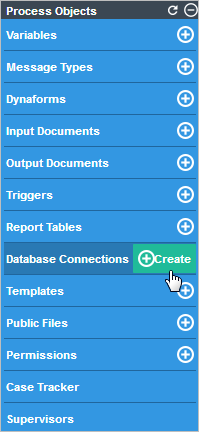
A dialog box will open where a new database connection can be defined:
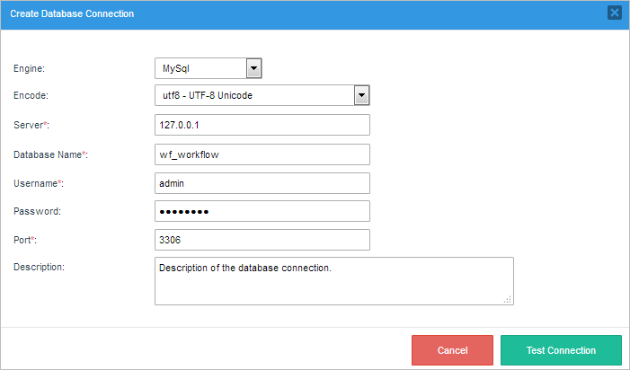
- Engine: Select the type of database software: MySQL, PostgreSQL, SQL Server or Oracle. Note that ProcessMaker will only offer databases in the dropdown list that have PHP modules installed on the server running ProcessMaker. To use a Sybase database, select SQL Server. To consult one of ProcessMaker's internal databases, select MySQL.
- Encode: If a MySQL or PostgreSQL database is being used, then this field will appear to select the character encoding used in the external database. To consult one of ProcessMaker's internal databases, select utf8-UTF-8 Unicode.
- Server: (Required) Enter the IP address or domain name where the database source is installed. If the database is located on the same server as ProcessMaker, then enter: 127.0.0.1
- Database Name: (Required) Enter the name of the database to be consulted. Database names generally aren't case sensitive.
- Username:: (Required) Enter the username to log into the external database.
- Password:: Enter the password (if necessary) to log into the external database.
- Port: (Required) Enter the port number used by the external database. By default, it is set to 3306 for MySQL, 5432 for PostgreSQL, 1521 for Oracle, and 1433 for SQL Server.
- Description: Enter a brief description about the database connection.
Show ID: Click on this button to display the unique ID of the database connection, which is a 32 hexadecimal number used by ProcessMaker to identify the connection. This number is needed to use the executeQuery() function in a trigger.
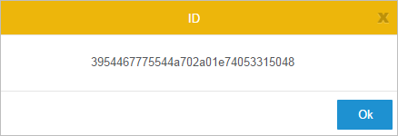
- Type: Shows the database engine used for the connection.
- Server: Shows the IP address or domain name of the server where the external database is located.
- Database name: Shows the name of the external database.
- Description: Displays the description of the connection next to the database name.
- Edit: Click to edit the database connection.
Delete: Click to delete the connection. A window will appear to confirm the deletion. Click Yes to close the window and return to the list of databases. Click No to delete the connection, and a flash message confirming the deletion will be shown at the top of the window.

- Pagination control: Use this control to navigate through the pages of connections, which show 10 connections per page.
- Search field: Enter text into this field to search among the databases connections.
- Create: Click this button to create a new database connection.
-
Using the Microsoft Windows Services console: Open a command line (Start > All Programs > Accessories > Command Prompt) and type:
services.msc The Services console will open. Search for the service processmakerApache and click on the Restart option.

The Service Control will restart the Apache service.

-
Using the Bitnami ProcessMaker Stack Manager Tool: (Only if ProcessMaker was installed with the Bitnami installer) Open the manager tool by going to Start > All Programs > Bitnami ProcessMaker and select Bitnami ProcessMaker Stack Manager Tool. Go to the Manage Servers tab, select "Apache Web Server" and click on the Restart button.

-
Using only the Command Prompt: Open a command line (Start > All Programs > Accessories > Command Prompt) and go to the Apache directory inside the ProcessMaker folder. For instance, for a Bitnami Installation on the C: disk, the directory will be:
cd c:\Bitnami\processmaker-3.0.1.8-0\apache2\bin The Apache service created during the ProcessMaker installation is named "processmakerApache". Execute the following command (that includes the name of the service) to restart the Apache service.
httpd -n processmakerApache -k restart -
EXEC procedure-nameis allowed in the following controls: dropdowns or suggests. Here is an example with a dropdown control:
-
EXEC procedure-nameis also allowed in triggers. Here is an example filling a grid control with data:@=productsGrid = array();
$db = "71525495056005261835755079295218"; //Unique example ID of a database connection
$products = executeQuery("EXEC productPro2", $db);
if (is_array($products) and count($products) > 0) {
for ($i = 1; $i <= count($products); $i++) {
@=productsGrid[$i] = array(
"productID" => $products[$i]['productID'],
"productName" => $products[$i]['productName']
);
}
} -
EXEC procedure-name @VALUE = 'some-value'is not allowed because the sp_serveroption can not be used inside a ProcessMaker transaction. For example, using a trigger with the following code displays an error similar to the one on the image:$db = "71525495056005261835755079295218"; //Unique example ID of a database connection
$result = executeQuery("EXEC productPro2 @VALUE = 'Mixer'", $db);
-
use database-name; EXEC procedure-name;is not allowed because the database name is already set on the database configuration. For example, using a trigger with the following code displays an error similar to the one on the image:$db = "71525495056005261835755079295218"; //Unique example ID of a database connection
$result = executeQuery("use sqlCustomConn; EXEC productPro2;, $db);
- The source code of ProcessMaker is written in UTF-8, and produces UTF-8 HTML pages.
- The character set for the Apache server needs to be UTF-8.
- AJAX requests using JSON encode are in UTF-8.
- The collation in MySQL for ProcessMaker databases is in UTF-8.
- Setup freetds to send UTF-8 data to ProcessMaker.
- Remove some lines in the MSSQLResultSet.php file.
- /gulliver/thirdparty/creole/drivers/mssql/MSSQLResultSet.php
- Note: This database connection has been tested only with Oracle v. 12.c in CentOS installations.
- http://<processmaker-address>/testoci8.php
- http://192.168.0.1:8080/testoci8.php
- "Driver={DRIVER-NAME};Server=SERVER-URL;Database=DB-NAME;"
After filling out the information about the external database connection, click on Cancel to close the window without saving the configuration, or click on Test Connection to check if the configuration is correct.
If ProcessMaker succesfully connects to the external database, all testing criteria will be checked. The test results will be displayed in a new window, as seen in the image below.
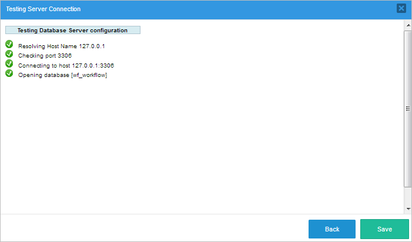
Click on Back to return to the previous window. To save the database connection, click on Save and it will be added to the list of existing database connections. A flash message will appear at the top of the window indicating that the connection was saved successfully.
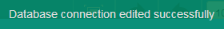
If the connection was unsuccessful, the failed criteria will be marked with an X.

Managing the Database Connections
To manage the database connections inside a process, click on the Database Connections option inside the Process Objects toolbox.
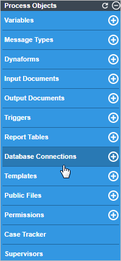
A dialog box will open with a list of the existing database connections and their details:

MySQL
All the necessary modules are already installed to use an external MySQL database, since those same modules are needed to use the internal databases used by ProcessMaker.
By default, MySQL servers are set up to only receive local connections from the localhost. If ProcessMaker is trying to connect to a MySQL server on another machine, then that server will have to be configured to allow external connections. Edit the my.cnf file of the MySQL server and comment out the line by adding a # symbol at the beggining of the following line:
Then restart the MySQL server. To check whether MySQL is listening for external connections, in Windows issue the command:
A line, similar to the one below, will be displayed:
In Linux/UNIX, use the command:
A line, similar to the one below, will be displayed:
When setting up a database connection to an external MySQL database, the character encoding must be selected, such as Latin-1 and UTF-8.
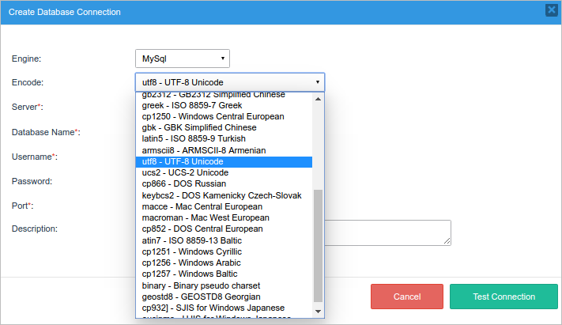
To find the character encoding used by the MySQL database, log in to MySQL, change to the database and issue the status command:
Look for the Client characterset parameter, which is the character set that ProcessMaker will use to send queries to the MySQL database. Conn. characterset is the character set that MySQL will used to send information back to ProcessMaker.
In the configuration of ProcessMaker's database connection, set Encode to the character set used by Client characterset and Conn. characterset.

ProcessMaker expects the Client and Connection character set to be the same. If they aren't the same, change them to be the same. To change them temporarily, use:
To change them permanently, add the following lines to my.cnf:
Then, restart the MySQL server.
PostgreSQL
For ProcessMaker to connect to a PostgreSQL database that is installed on the same server, the PostgreSQL client software has to be installed. To connect ProcessMaker to SQL Server databases, follow the instructions for your environment:
Windows
If PostgreSQL is not installed, download the PostgreSQL installer for Windows and install it.
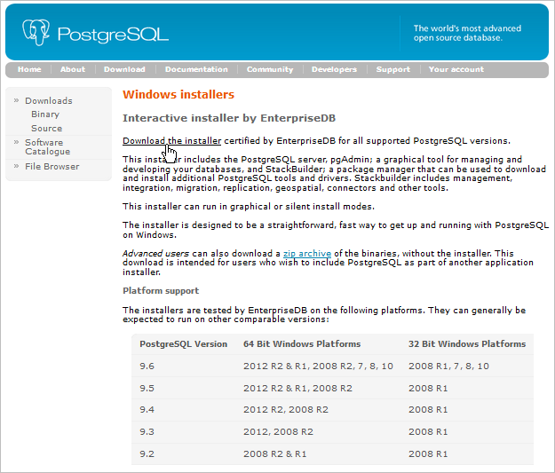
If the PostgreSQL database is located on a server other than the ProcessMaker server, don't forget to configure PostgreSQL to allow connections from the ProcessMaker server.
Go to the PHP directory that is used by ProcessMaker and verify that the php_pgsql.dll and php_pdo_pgsql.dll libraries are inside the ext directory. The location of the PHP directory depends on the way of which ProcessMaker was installed. For example, if the ProcessMaker Windows Installer was used, the PHP files may be found at C:\Program Files\ProcessMaker\php\ext\.
Enable these PHP's modules by editing the php.ini file with a plain text editor. The php.ini file is located at the same PHP directory.
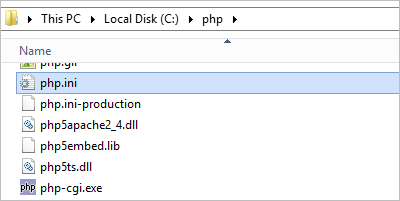
Look for the Windows Extensions section and uncomment the PostgreSQL modules by removing the semicolon (;) from the beginning of the following lines:
extension=php_pgsql.dll

Restart the Apache server to use the new PHP configuration.
To verify that PHP is now using the PostgreSQL modules, log in to ProcessMaker, and go to Admin > Settings > PHP Information. Search for the pdo_mysql and the pgsql extensions, which are usually listed after the pdo_mysql module, as shown in the image below.
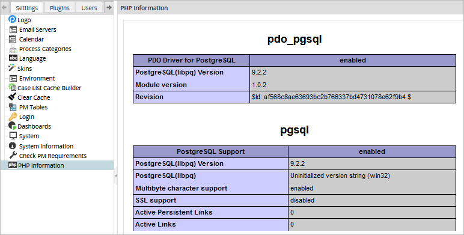
Open a process and go to Database Connections and click on the New button. The PostgreSql option should now be available under the Engine dropdown box in the Create Database Connection window.
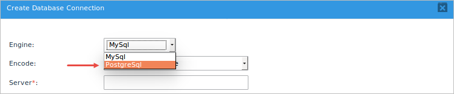
GNU/Linux or UNIX
To install the PostgreSQL client and PostgreSQL's PHP module, log in as the root user and use the repositories of your distribution.
Red Hat/Cent OS/Fedora:
Debian/Ubuntu:
SUSE/openSUSE:
After installing, verify that the pgsql and pdo_pgsql modules are enabled in PHP with the command:
In ProcessMaker open a process, go to Database Connections, and click on New. PostgreSQL should now be an available option in the Engine dropdown box.
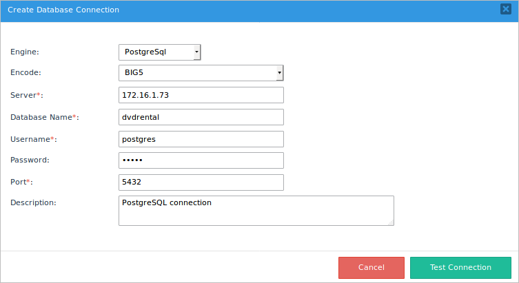
Microsoft SQL Server
To connect ProcessMaker to SQL Server databases, follow the instructions for your environment:
Windows
To connect ProcessMaker to a remote or local MSSQL installation on a Windows server, follow the steps below:
1. Download the php_dblib.dll file taking into account your system's architecture and PHP version. For instance, ProcessMaker 3.1.x (current latest version) is recommended to work with PHP 5.5 Thread Safe. Depending on the system architecture (X86 or x64), download one of the marked options.
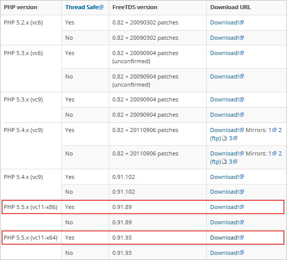
2. Place the php_dblib.dll file into the /php/ext directory (depending on the installation) located at:
Bitnami Installation:

Self-Installer Installation:
Manual Installation:
3.Open the php.ini file located at:
Bitnami Installation:
Self-Installer Installation:
Manual Installation:
To enable the mssql extension, add the following line under the Dynamic Extensions section:

Next, restart the Apache server to use the new PHP configuration. This can be done in several ways:
Finally, log into ProcessMaker and open a process. Then, go to Database Connections and click on the New link. The option Microsoft SQL Server should now be available under the Engine dropdown box.

Fill the rest of the fields according to the description in the Creating a New Database Connection section.

Finally, click on the Test Connection option. If the configuration is correct, all marks will turn green in the Testing Server Connection dialog.

If a problem occurs, see the Possible Configuration Issues section.
Possible Configuration Issues
Microsoft SQL Server Option is Missing
If for some reason the SQL Server option does not appear in the list of Database Connections, verify that PHP is now using the mssql extension. Log into ProcessMaker and select the Admin tab. Click the PHP Information option under Settings, and scroll down to the mssql extension section that is usually between the myhash and mysql sections.

If the section is missing, restart the server system to apply the recent changes.
Destination Port Unreachable
If the Test Connection option is clicked, the following dialog will be displayed:

Verify that the MSSQL remote server is allowing remote connections. Open SQL Server Configuration Management, click on SQL Server Configuration Manager, go to Protocols for SQLExpress and make sure TCP/IP is enabled. The TCP/IP option allows other computers to connect with MSSQL through the IP. If not, right click on it and choose Enable.

Check that the port is the correct one by right-clicking on TCP/IP and selecting Properties. In the TCP/IP Properties dialog, select the IP Addresses tab and scroll down to IPAII. Make sure TCP Dynamic Ports is blank and that TCP Port is set to 1433.

Last, ensure that the SQL Server is running in the Network Service mode by going to SQL Server Services. Right-click on SQL Server and select Properties.

In the properties dialog, check that "Network Service" is selected in the Built-in account option.

The changes won't take effect until the SQLExpress service is restarted.

If there is still a problem, make sure the TCP port 1433 is not blocked by the firewall.
MS-SQL Connection Refused
If the Test Connection option is clicked, the following dialog is displayed:

Notice that MSSQL has two methods of authentication: Windows Authentication and SQL Server Authentication. ProcessMaker uses the SQL Server Authentication method to establish a connection.
The user must choose the login method. To see the login method for a user, open the SQL Server Management Studio, right-click on Security, select Login and look for the user specified in the connection.

Right-click on the user and choose Properties. Verify that the credentials provided are the right ones in the Login Properties dialog.

After that, verify the user settings by going to Status. Check that the Permission to connect to database engine option is "Grant" and if Login is "Enabled".

Database Does Not Exist
If the Test Connection option is clicked, the following dialog will be displayed:

Verify that the user specified is the owner or has permission to access the database. To verify this, open the SQL Server Management Studio, right-click on the database and choose Properties.

In the Database Properties dialog, check that the specified user is the owner of the database.

Linux/UNIX
ProcessMaker servers running on Linux/UNIX can access Microsoft SQL Server or Sybase databases by installing FreeTDS. Most distributions provide FreeTDS and a PHP extension for SQL Server or Sybase. If your distribution doesn't provide a package for FreeTDS, see these instructions to compile FreeTDS from the source code.
Red Hat/CentOS/Fedora
Install FreeTDS and the php-mssql package using yum:
Then, edit the /etc/php.ini file and add the following line to enable the mssql extension:
Ubuntu
If using Ubuntu 16.04 or later, log in as root and install FreeTDS and the php5.6-sybase module using the following command:
Edit the php.ini file that is located in the /php/5.6/apache2/ directory.
Add the following line to enable the mssql extension.
Debian
If using Debian 8.7 (Squeeze), log in as root, install FreeTDS and the php5.6-sybase package with the following command:
If using Debian 5 (Lenny), install the freetds-common package instead:
SUSE/openSUSE
SUSE/openSUSE does not provide a PHP package to access MS SQL Servers, so freeTDS and the mssql PHP extension will have to be compiled from the source code.
First, install the unixOBDC package and the tools for compiling:
Then, download the source code of the latest stable version of freeTDS. Decompress the code then configure and compile it:
Install the php5-devel package (which contains the phpize command):
Next, check which version of PHP you are using:
Then, download the source code for your version of PHP to a local directory. Decompress the code, switch to the ext/mssql directory and compile the mssql extension. Note that the following commands will only compile the mssql extension and insert it into your existing installation of PHP without altering anything else:
Then, configure PHP to use the new extension by editing the PHP configuration files:
In both files, add the line:
Finally, restart Apache to be able to use the new configuration.
The Microsoft SQL Server will be added to the list of Database Connections.
For older versions of Red Hat/CentOS that don't contain a php-mssql package, see these instructions to manually compile FreeTDS and PHP's mssql extension.
Executing store procedures
If planning on executing stored procedures on the SQL Server database, edit the FreeTDS configuration file, which is generally found at /etc/freetds/freetds.conf
Edit the following lines to specify the IP address and port of server where SQL Server is installed and the TDS version number:
port = 1433
tds version = 7.0
Best Practices When Using Stored Procedures
These are examples of best ways to use stored procedures in MSSQL:
If the SQL Server Database Does Not Use UTF-8 Encoding
Some issues might arise if the SQL Server database does not use the UTF-8 character set and contains non-ASCII characters, because ProcessMaker is designed to use UTF-8.
These four components need to be in UTF-8 for everything to work: source code, Apache server, interactive data and database fields.
Solving Issues with UTF-8 Characters
To display Unicode data from a SQL server, it is recommended to:
Setup FREETDS in Linux/UNIX
To avoid permissions problems with the freetds.conf file, it is recommended to give the freetds.conf file global read permissions. For example:
Make the environment variable FREETDSCONF point to the location of the freetds.conf file. At the beginning of the Apache service script (which is located at /etc/init.d/httpd in Red Hat/Cent OS/Fedora and at /etc/init.d/apache2 in Debian/Ubuntu/SuSE), add the following line:
Finally, in the global section of the freetds.conf file, change the following lines to:
client charset = UTF-8
Note: The TDS version may change depending on the version of the database engine with which the server is trying to communicate. For more information, please visit the freetds guide page.
Change MSSQLResultSet.php
Once freetds gets all data in UTF-8, the code is no longer needed to convert all fields to UTF-8. Remove the lines 123-133 from the MSSQLResultSet.php file, which is located at:
Collation Database Configuration
Usually, when trying to execute queries that contain the character ñ, an error will occur. If searching in fields, the result will be NULL.
The problem is that the database collation in ProcessMaker is configured with UTF-8. To make that work, data must be converted from the character set used by the SQL Server database to UTF-8 using PHP's mb_convert_encoding() function. To convert from ISO-8859-1, which is the most commonly used character set in Windows, the utf8_encode() and utf8_decode() functions can be used.
For example, the following trigger code converts from UTF-8 to ISO-8859-1 to send queries to an SQL Server database and then it converts the search results from ISO-8859-1 to UTF-8, so the results can be displayed in a grid field in ProcessMaker:
$group = utf8_decode(@@SelectedGroup); //convert from UTF-8 to ISO-8859-1
$rows = executeQuery("SELECT FIRST_NAME + ' ' + LAST_NAME from TABLE_EMPLOYEES
where GROUP = '$group' and COMPANY in ('5','4','3','1')", $idMssql);
//place search results in a grid field named "EmployeesGrid" which has the rows firstName and lastName,
//which will be displayed in a subsequent DynaForm:
@=EmployeesGrid = array();
for ($i = 1; $i <= count($rows); $i++) {
//use utf8_encode() to convert from ISO-8859-1 to UTF-8:
@=EmployeesGrid[$i] = array(
'firstName' => utf8_encode($rows[$i]['FIRST_NAME']),
'lastName' => utf8_encode($rows[$i]['LAST_NAME'])
);
}
Oracle
To connect to an Oracle database, Oracle's client software must be installed on the same server running ProcessMaker. If the Oracle database does not use the UTF-8 character set used by ProcessMaker, then see Converting Oracle to UTF-8.
Note: If using Oracle Instant Client to connect to an Oracle database, make sure to use the same version of Instant Client as the Oracle Database. The following SQL command can be used to find the version of the database:
CentOS
Oracle provides instructions and RPM packages to install its Instant Client in Linux, which can be downloaded for free at:
If ProcessMaker is running on a 32 bit system, download Instant Client for Linux x86. For a 64 bit system, download Instant Client for Linux x86-64. For an AMD system, download Instant Client for Linux AMD64 (32-bit and 64-bit). Make sure to download the version of Instant Client Basic or Basic-Lite that matches your version of Oracle. It is also recommended to download the SQL*Plus and SDK packages, but it is not necessary.
Follow the steps below to install and configure Instant Client in Linux on either a Red Hat or Debian based system.
Install Instant Client
Open a terminal on the server where ProcessMaker is installed and login as root (or use the sudo) to install the following packages needed by Oracle Instant Client:
Copy the Oracle Instant Client package files to the current directory and then issue the following command to install them:
If using a 64 bit version of Instant Client, then create symbolic links so the Instant Client can be found:
(Make sure to change 11.2 to match your version of Instant Client.)
Then set the LD_LIBRARY_PATH variable to where the Instant Client library is located. For a 64 bit system, issue the following command:
For a 32 bit system:
(Make sure to change 11.2 to match
your version of Instant Client.)
Then set the LD_LIBRARY_PATH for the current session:
Install PDO_OCI
Download the PDO_OCI-1.0.tgz file and decompress it with the following commands:
Then, configure PHP to use PDO_OCI:
Make sure to change 11.2 to match
your version of Instant Client. Then compile and install the PDO_OCI
module:
Include the module in PHP and restart Apache so the module can be used:
Finally, check whether the PDO_OCI module was installed and included in PHP:
The following line should appear in the output:
Install OCI8
Use the pear command to download the OCI8 source code and then decompress it:
(Change 1.4.9 to the version of OCI8 that was downloaded by pear.) Then, configure how the code will be compiled:
(Change 11.2 to your version of Instant Client. For 32 bit systems, remove 64.)
Then, compile and install:
Include OCI8 in PHP and restart Apache to be able to use the new module:
Finally, check whether it was installed and included correctly:
The output should include lines like the following:
Checking the Oracle Installation
After installing an Oracle client and the OCI8 and PDO_OCI extensions in PHP, log in to ProcessMaker and go to the Designer and open a process for editing. Click on the Database Connections tab and create a new connection. In the Engine dropdown box, there should be an Oracle option:
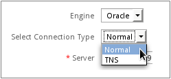
Oracle Troubleshooting
Check the Apache error log file for startup errors.
Temporarily set display_error=On in php.ini so script errors are displayed. Switch it back off when finished for security reasons.
Chapter 9 of The Underground PHP and Oracle Manual contains information about common connection errors and discusses alternative ways to set environment variables.
Oracle's SQL*Plus command line tool can be downloaded from the [www.oracle.com/technetwork/database/features/instant-client/index-100365.html Instant Client] page to help resolve environment and connection problems. Check whether SQL*Plus can connect and then ensure the Environment section (not the Apache Environment section) of phpinfo.php shows the equivalent environment settings.
The following testoci8.php script can be used to check whether the OCI8 extension works with Oracle. Create the testoci8.php file at the location <install-directory>/workflow/public_html/testoci8.php with the following contents:
//change the username, password, machine, domain and address:
$conn = oci_connect('username', 'password', 'mymachine.mydomain/mydatabase');
$stid = oci_parse($conn, 'select table_name from user_tables');
oci_execute($stid);
echo "<table>\n";
while (($row = oci_fetch_array($stid, OCI_ASSOC+OCI_RETURN_NULLS)) != false) {
echo "<tr>\n";
foreach ($row as $item) {
echo " <td>".($item !== null ? htmlentities($item, ENT_QUOTES) : " ")."</td>\n";
}
echo "</tr>\n";
}
echo "</table>\n";
?>
Make sure to modify the connection credentials to suit your database. Then open a web browser and go to the address:
For example, if ProcessMaker is installed at the address 192.168.0.1 on port 8080, then go to:
The tables in the Oracle database should be listed on the page. Make sure to delete the testoci8.php file when done testing.
Converting Oracle to UTF-8
If an Oracle database uses a character set other than UTF-8, then the NLS_LANG environment variable needs to be set to the UTF-8 character set on the server where ProcessMaker is installed.
The format for the NLS_LANG variable should be:
[NLS_LANGUAGE]_[NLS_TERRITORY].[NLS_CHARACTERSET]
First, determine the current locale settings in the Oracle database with the following SQL query:
For example, if the locale is american_america.EL8MSWIN1253, then this needs to be changed to american_america.UTF-8.
Linux:
On a Linux server, edit the file /etc/environment with a plain text editor and add the line:
Unfortunately the /etc/environment file isn't read by cron scripts, so also edit the /etc/profile file and add the line:
These settings should take effect the next time the server is rebooted. To have them take effect immediately, enter the following in the command line of a terminal:
Windows:
On a Windows server, go to Control Panel > System.
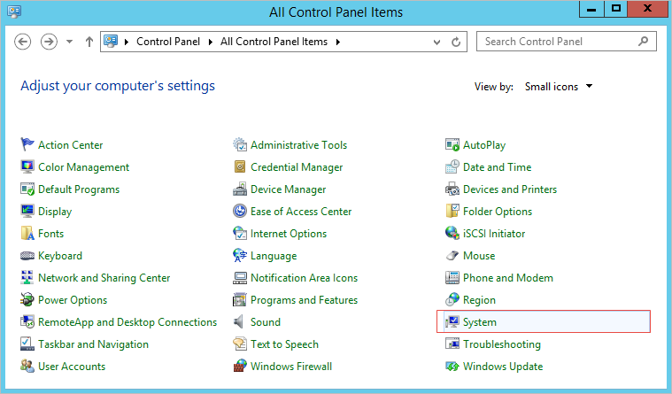
Click on the Advanced system settings option on the left side of the window.
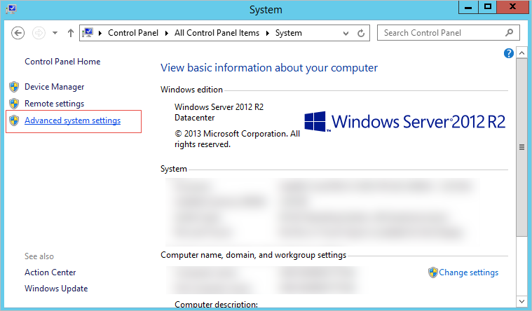
Click on Environment Variables.
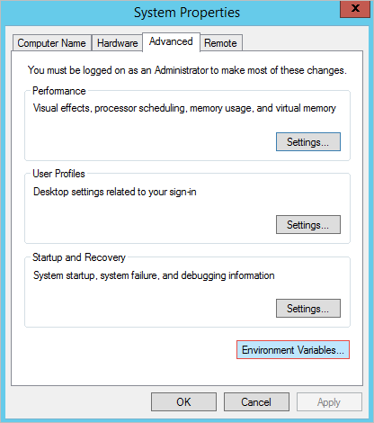
In the System variables section, click New.

In the Variable Name field, enter NLS_LANG and in the Variable Value field, enter American_America.UTF8. Click on Ok and close all dialogs.
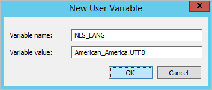
Then, reboot the server for the changes to take effect.
Other Types of Databases
If using another type of database that ProcessMaker does not support, then it is possible to connect to that database using PHP's database extensions inside a trigger. Many types of databases have their own specialized functions, such as oci_connect() or mysql_connect(), but almost all databases and spreadsheets also support the Open Database Connectivity (ODBC) protocol.
Unfortunately, database connections created in triggers can not be used like normal database connections in ProcessMaker. To be queried like a normal database when using the SQL Connection and SQL properties in Dynaform fields, first the results of the database query will have to be stored as an associative array of associative arrays in the $_SESSION superglobal variable, so they can be accessed by DynaForm fields.
ODBC
The specialized PHP functions for each type of database are generally easier to use, but PHP's ODBC functions offer a standardized way to connect to any data source.
Installing ODBC
Before trying to use ODBC in PHP, make sure that the odbc module is installed in PHP by going to the command line and issuing the command:
If "odbc" doesn't appear in the list of modules, then it will need to be installed:
Debian/Ubuntu:
Red Hat/CentOS/Fedora:
SUSE/OpenSUSE:
Windows:
The ODBC module should be installed by default
in PHP.
Using ODBC in Triggers
First, establish a connection to the database with obdc_connect() (or obdc_pconnect() for a persistent connection):
The first parameter is the data source name, which contains the custom parameters needed to connect to different types of databases. It might contain something like:
but it varies widely. See this list of connection strings.
Populating a Textbox
To set the value of a Dynaform textbox, fire the trigger BEFORE the Dynaform that queries the database using ODBC and then set the value of the case variable of the textbox.
For example, to query a Visual FoxPro database and set the value of a textbox named "ClientName":
$con = obdc_connect($dns, "", "");
if ($con !== false) {
$res = odbc_exec($con, "SELECT FIRSTNAME, LASTNAME FROM CLIENTS WHERE CLIENT_ID='ARG29'");
if ($row = odbc_fetch_array($res))
@@ClientName = $row['FIRSTNAME'] . ' ' . $row['LASTNAME'];
}
Populating a Grid
To populate a Dynaform grid, create an associative array of associative arrays and assign it to the case variable of the grid. The keys in the associative arrays must be the same as the names of the grid fields, so use AS in the SQL query to rename the fields from the table if they don't match the field names in the grid.
For example, this trigger uses OBDC to connect to an Access database and populate a Dynaform grid named "ProductsGrid", which has the fields "serialNo", "productTitle", "description" and "listPrice":
$con = obdc_connect($dns, "someuser", "p4sSw0rd");
if ($con !== false) {
$aProducts = array();
$cnt = 1;
$sql = "SELECT SERIAL AS serialNo, TITLE AS productTitle, DESC AS description,
PRICE AS listPrice FROM PRODUCTS WHERE CATEGORY='current'";
$res = odbc_exec($con, $sql);
while ($row = (odbc_fetch_array($res)))
$aProducts[$cnt++] = $row;
@@ProductsGrid = $aProducts;
}
else {
$g = new G();
$g->SendMessageText("Unable to connect to Access database!", "ERROR");
}
Discovering Ports and Debugging
To find the port number being used by a database, use the nmap command. This program is installed by default on most Linux/UNIX distributions, but it needs to be installed in Windows.
If the database is located on the same machine as the ProcessMaker server, issue the command:
If the database is on another server, enter the domain name or IP address where it is located. For example:
nmap will list the ports that are currently being used by the server. If the database service is activated and it's port isn't blocked by a firewall, then a port number should be listed for the database:
If a port number isn't listed for the database, then go to the server where the database is installed and make sure that it is being run as a service:
MySQL:
Red Hat/Cent OS/Fedora:
Login as root (or use sudo) and issue the command:
To see a list of all services:
Debian/Ubuntu:
Login as root (or use sudo) and issue the command:
To see a list of all services:
Windows:
Open the command prompt (go to Start > Run and enter:
cmd) and enter the following command
to see a list of all running services:
To see the status of MySQL:
For example, to see the status of MySQL installed by the automatic ProcessMaker Installer:
PostgreSQL:
Red Hat/Cent OS/Fedora:
Login as root (or use sudo) and issue the command:
For recent versions, it may be necessary to specify the version number:
To see a list of all services:
Debian/Ubuntu:
Login as root (or use sudo) and issue the command:
To see a list of all services:
Windows:
Open the command prompt (go to Start > Run and enter:
cmd) and enter the following command
to see a list of all running services:
To see the status of PostgreSQL:
Oracle:
Linux/UNIX:
Oracle uses the dbstart and dbstop commands (which are located in the $ORACLE_HOME/bin directory) to start and stop the database, although a service script
can be added in the /etc/init.d/ directory.
Likewise, it uses the lsnrctl start and
lsnrctl stop commands to start and stop
the listener and isqlplusctl start and
isqlplusctl stop to start and stop SQL*Plus.
To see the status of the Oracle database, use the following command (located in the $ORACLE_HOME/bin directory):
Windows:
Open the command prompt (go to Start > Run and enter:
cmd) and enter the following command
to see a list of all running services:
Oracle creates a service for its listener and for its database:
For example, to see the status of an Oracle database named "ORCL" and the listener:
MS SQLServer:
Windows:
Open the command prompt (go to Start > Run and enter:
cmd) and enter the following command
to see a list of all running services:
Oracle creates a service for its listener and for its database:
For example: